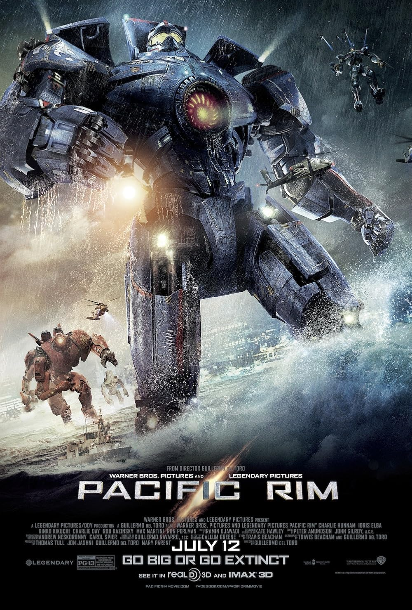

Favorite Television Series
Brooklyn 99A television series I can watch over and over again!

Favorite Movie
Pacific Rim by Guillermo del ToroAn action-packed film that is my all-time favorite.
Here are some of my favorite things – feel free to explore!
A television series I can watch over and over again!
An action-packed film that is my all-time favorite.